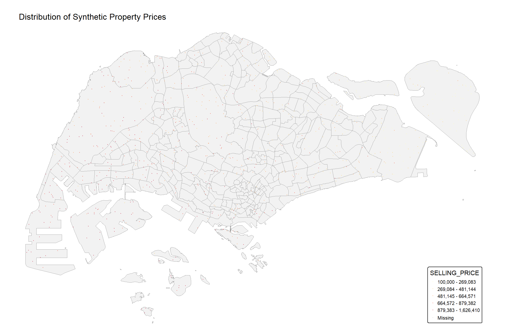
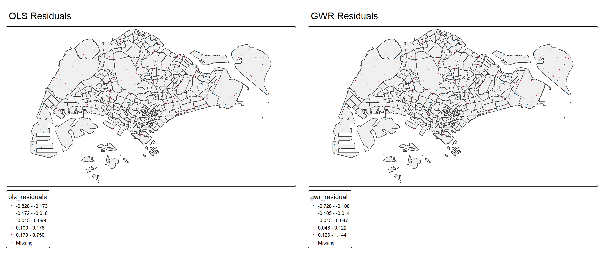

pacman::p_load(sf, tidyverse, tmap, spdep, GWmodel,
ggpubr, corrplot, plotly, gtsummary,
olsrr, devtools, parallel, readr)Hands-on Exercise 09: Spatial Accessibility Analysis and GWR Method
1. Overview
Since the OD_Matrix.csv contains Origin-Destination cost data rather than property transaction data, this exercise will demonstrate: 1. Spatial accessibility analysis using the OD matrix 2. Creating synthetic property data for GWR demonstration 3. Applying GWR methods to understand spatial heterogeneity
Learning Objectives
By the end of this exercise, you will be able to: - Understand OD matrix applications in spatial analysis - Generate synthetic spatial data for modeling - Apply GWR methods to spatial data - Visualize spatial patterns and relationships
2. The Data
We have the following datasets: 1. URA Master Plan 2014 subzone boundaries (MP14_SUBZONE_NO_SEA_PL) 2. Eldercare facilities (ELDERCARE) 3. OD Matrix - Origin-Destination cost matrix 4. Hexagon grid (hexagons) for visualization
3. Getting Started
3.1 Loading Required Packages
3.2 Setting Up the Environment
# Set tmap mode to plot for better performance
tmap_mode("plot")
# Set seed for reproducibility
set.seed(12345)
# Set up parallel processing
cores <- max(1, parallel::detectCores() - 1)
cat("Number of cores available for parallel processing:", cores, "\n")Number of cores available for parallel processing: 21 4. Import Geospatial Data
4.1 Import Subzone Boundaries
# Read Master Plan 2014 Subzone Boundary
mpsz <- st_read(dsn = "data/geospatial",
layer = "MP14_SUBZONE_NO_SEA_PL",
quiet = TRUE) %>%
st_transform(crs = 3414)
cat("Number of subzones:", nrow(mpsz), "\n")Number of subzones: 323 4.2 Import Eldercare Facilities
# Read eldercare facilities
eldercare <- st_read(dsn = "data/geospatial",
layer = "ELDERCARE",
quiet = TRUE) %>%
st_transform(crs = 3414)
cat("Number of eldercare facilities:", nrow(eldercare), "\n")Number of eldercare facilities: 120 4.3 Import Hexagon Grid
# Read hexagon grid
hexagons <- st_read(dsn = "data/geospatial",
layer = "hexagons",
quiet = TRUE) %>%
st_transform(crs = 3414)
cat("Number of hexagons:", nrow(hexagons), "\n")Number of hexagons: 3125 5. Import and Analyze OD Matrix
5.1 Import OD Matrix
# Read OD Matrix
od_data <- read_csv("data/aspatial/OD_Matrix.csv",
show_col_types = FALSE)
# Display structure
glimpse(od_data)Rows: 375,000
Columns: 6
$ origin_id <dbl> 1, 1, 1, 1, 1, 1, 1, 1, 1, 1, 1, 1, 1, 1, 1, 1, 1, 1, 1…
$ destination_id <dbl> 1, 2, 3, 4, 5, 6, 8, 9, 10, 11, 12, 13, 14, 15, 16, 18,…
$ entry_cost <dbl> 667.9336, 667.9336, 667.9336, 667.9336, 667.9336, 667.9…
$ network_cost <dbl> 19846.87, 45026.76, 17644.17, 36009.56, 31068.09, 31194…
$ exit_cost <dbl> 47.64874, 31.87162, 173.47882, 92.19676, 64.62840, 117.…
$ total_cost <dbl> 20562.45, 45726.57, 18485.58, 36769.69, 31800.65, 31979…# Summary statistics
summary(od_data$total_cost) Min. 1st Qu. Median Mean 3rd Qu. Max.
36.93 11675.78 17303.99 18355.00 23649.11 56350.82 5.2 Create Distance Matrix
# Convert OD data to wide format distance matrix
distance_matrix <- od_data %>%
select(origin_id, destination_id, total_cost) %>%
pivot_wider(names_from = destination_id,
values_from = total_cost,
names_prefix = "dest_")
cat("Distance matrix dimensions:", dim(distance_matrix), "\n")Distance matrix dimensions: 3125 121 # Display first few rows and columns
distance_matrix[1:5, 1:6]# A tibble: 5 × 6
origin_id dest_1 dest_2 dest_3 dest_4 dest_5
<dbl> <dbl> <dbl> <dbl> <dbl> <dbl>
1 1 20562. 45727. 18486. 36770. 31801.
2 2 23069. 48233. 20992. 39276. 34307.
3 3 23590. 48754. 21513. 39797. 34828.
4 4 24069. 49233. 21992. 40276. 35307.
5 5 24241. 49405. 22164. 40448. 35479.5.3 Analyze Accessibility to Eldercare
# Calculate accessibility metrics
# For demonstration, we'll use the first 120 destinations as eldercare locations
eldercare_ids <- 1:min(120, max(od_data$destination_id))
accessibility_eldercare <- od_data %>%
filter(destination_id %in% eldercare_ids) %>%
group_by(origin_id) %>%
summarise(
min_cost_eldercare = min(total_cost),
mean_cost_eldercare = mean(total_cost),
accessibility_index = 1 / mean(total_cost) * 10000
)
summary(accessibility_eldercare) origin_id min_cost_eldercare mean_cost_eldercare accessibility_index
Min. : 1 Min. : 36.93 Min. : 4974 Min. :0.2389
1st Qu.: 782 1st Qu.: 2213.14 1st Qu.:13666 1st Qu.:0.4547
Median :1563 Median : 4069.30 Median :16768 Median :0.5964
Mean :1563 Mean : 6118.05 Mean :18425 Mean :0.6055
3rd Qu.:2344 3rd Qu.: 8061.08 3rd Qu.:21992 3rd Qu.:0.7317
Max. :3125 Max. :32450.08 Max. :41859 Max. :2.0105 6. Generate Synthetic Property Data
Since we don’t have actual property data, we’ll create synthetic data based on spatial patterns:
# Generate synthetic property data for demonstration
n_properties <- 2000
# Create random points within Singapore boundaries
bbox <- st_bbox(mpsz)
synthetic_properties <- data.frame(
property_id = 1:n_properties,
x = runif(n_properties, bbox$xmin, bbox$xmax),
y = runif(n_properties, bbox$ymin, bbox$ymax)
) %>%
st_as_sf(coords = c("x", "y"), crs = 3414)
# Keep only points within actual boundaries
synthetic_properties <- synthetic_properties[mpsz, ]
n_properties <- nrow(synthetic_properties)
cat("Number of synthetic properties within boundaries:", n_properties, "\n")Number of synthetic properties within boundaries: 838 6.1 Generate Property Attributes
# Extract coordinates for distance calculations
coords <- st_coordinates(synthetic_properties)
# Calculate distance to CBD (assume CBD is at central point)
cbd_point <- c(mean(bbox$xmin, bbox$xmax), mean(bbox$ymin, bbox$ymax))
dist_cbd <- sqrt((coords[,1] - cbd_point[1])^2 + (coords[,2] - cbd_point[2])^2)
# Generate synthetic property attributes with spatial correlation
synthetic_properties <- synthetic_properties %>%
mutate(
# Structural attributes
AREA_SQM = rnorm(n(), mean = 100, sd = 30) + (15000 - dist_cbd/1000) * 0.002,
AREA_SQM = pmax(AREA_SQM, 40), # Minimum 40 sqm
AGE = rpois(n(), lambda = 10) + runif(n(), 0, 5),
NO_OF_UNITS = sample(50:500, n(), replace = TRUE),
# Location attributes (using actual distances)
PROX_CBD = dist_cbd,
PROX_MRT = abs(rnorm(n(), mean = 800, sd = 400)) + dist_cbd * 0.05,
PROX_PARK = abs(rnorm(n(), mean = 500, sd = 200)),
PROX_SHOPPING_MALL = abs(rnorm(n(), mean = 1000, sd = 500)),
PROX_PRIMARY_SCH = abs(rnorm(n(), mean = 600, sd = 300)),
PROX_BUS_STOP = abs(rnorm(n(), mean = 200, sd = 100)),
# Binary attributes
FREEHOLD = sample(c(0, 1), n(), replace = TRUE, prob = c(0.7, 0.3)),
# Generate price based on attributes with spatial variation
SELLING_PRICE = 300000 + # Base price
AREA_SQM * 8000 + # Price per sqm
-AGE * 5000 + # Age depreciation
-PROX_CBD * 20 + # CBD distance effect
-PROX_MRT * 15 + # MRT distance effect
FREEHOLD * 50000 + # Freehold premium
rnorm(n(), 0, 50000) + # Random variation
# Add spatial autocorrelation component
10000 * sin(coords[,1]/5000) * cos(coords[,2]/5000),
# Ensure positive prices
SELLING_PRICE = pmax(SELLING_PRICE, 100000),
# Log transformation
LOG_SELLING_PRICE = log(SELLING_PRICE)
)
# Summary of synthetic data
summary(synthetic_properties %>%
st_drop_geometry() %>%
select(SELLING_PRICE, AREA_SQM, AGE, PROX_CBD, PROX_MRT)) SELLING_PRICE AREA_SQM AGE PROX_CBD
Min. : 100000 Min. : 40.0 Min. : 3.432 Min. : 6930
1st Qu.: 325512 1st Qu.:110.5 1st Qu.: 9.947 1st Qu.:25825
Median : 572747 Median :129.6 Median :12.441 Median :33394
Mean : 585239 Mean :129.4 Mean :12.472 Mean :33931
3rd Qu.: 831244 3rd Qu.:148.5 3rd Qu.:14.782 3rd Qu.:41905
Max. :1626410 Max. :212.6 Max. :23.104 Max. :59745
PROX_MRT
Min. : 691.2
1st Qu.:2014.4
Median :2469.3
Mean :2505.1
3rd Qu.:2965.2
Max. :4624.8 7. Exploratory Data Analysis
7.1 Visualize Property Distribution
tm_shape(mpsz) +
tm_polygons(col = "grey95",
border.col = "grey60",
lwd = 0.5) +
tm_shape(synthetic_properties) +
tm_dots(col = "SELLING_PRICE",
size = 0.02,
style = "quantile",
n = 5,
palette = "YlOrRd",
title = "Selling Price ($)",
alpha = 0.6) +
tm_layout(main.title = "Distribution of Synthetic Property Prices",
main.title.size = 1.2,
legend.position = c("right", "bottom"),
frame = FALSE)
7.2 Price Distribution Analysis
par(mfrow = c(1, 2))
hist(synthetic_properties$SELLING_PRICE/1000,
main = "Distribution of Selling Price",
xlab = "Selling Price ($'000)",
col = "lightblue",
breaks = 30)
hist(synthetic_properties$LOG_SELLING_PRICE,
main = "Distribution of Log Selling Price",
xlab = "Log(Selling Price)",
col = "lightgreen",
breaks = 30)
par(mfrow = c(1, 1))7.3 Correlation Analysis
# Select numeric variables for correlation
cor_vars <- synthetic_properties %>%
st_drop_geometry() %>%
select(SELLING_PRICE, AREA_SQM, AGE, PROX_CBD, PROX_MRT,
PROX_PARK, PROX_SHOPPING_MALL, PROX_PRIMARY_SCH, PROX_BUS_STOP)
# Calculate correlation matrix
cor_matrix <- cor(cor_vars)
# Visualize
corrplot(cor_matrix,
method = "circle",
type = "upper",
diag = FALSE,
tl.cex = 0.8,
tl.col = "black",
tl.srt = 45)
8. OLS Regression Model
8.1 Build OLS Model
# Build OLS model
ols_model <- lm(LOG_SELLING_PRICE ~ AREA_SQM + AGE +
PROX_CBD + PROX_MRT + PROX_PARK +
PROX_SHOPPING_MALL + PROX_PRIMARY_SCH +
PROX_BUS_STOP + FREEHOLD,
data = synthetic_properties)
summary(ols_model)
Call:
lm(formula = LOG_SELLING_PRICE ~ AREA_SQM + AGE + PROX_CBD +
PROX_MRT + PROX_PARK + PROX_SHOPPING_MALL + PROX_PRIMARY_SCH +
PROX_BUS_STOP + FREEHOLD, data = synthetic_properties)
Residuals:
Min 1Q Median 3Q Max
-0.82778 -0.11477 0.05392 0.15644 0.75009
Coefficients:
Estimate Std. Error t value Pr(>|t|)
(Intercept) 1.262e+01 6.532e-02 193.259 < 2e-16 ***
AREA_SQM 1.546e-02 2.797e-04 55.263 < 2e-16 ***
AGE -8.715e-03 2.328e-03 -3.744 0.000193 ***
PROX_CBD -4.022e-05 1.217e-06 -33.049 < 2e-16 ***
PROX_MRT -4.108e-05 2.013e-05 -2.040 0.041659 *
PROX_PARK -5.979e-06 3.997e-05 -0.150 0.881125
PROX_SHOPPING_MALL -2.859e-06 1.666e-05 -0.172 0.863771
PROX_PRIMARY_SCH 1.079e-05 2.670e-05 0.404 0.686122
PROX_BUS_STOP -4.446e-05 8.218e-05 -0.541 0.588645
FREEHOLD 1.090e-01 1.714e-02 6.358 3.36e-10 ***
---
Signif. codes: 0 '***' 0.001 '**' 0.01 '*' 0.05 '.' 0.1 ' ' 1
Residual standard error: 0.2278 on 828 degrees of freedom
Multiple R-squared: 0.9006, Adjusted R-squared: 0.8995
F-statistic: 833.2 on 9 and 828 DF, p-value: < 2.2e-168.2 Model Diagnostics
par(mfrow = c(2, 2))
plot(ols_model)
par(mfrow = c(1, 1))9. Test for Spatial Autocorrelation
9.1 Create Spatial Weights
# Add residuals to spatial data
synthetic_properties$ols_residuals <- residuals(ols_model)
# Create spatial weights
coords <- st_coordinates(synthetic_properties)
knn_nb <- knn2nb(knearneigh(coords, k = 8))
knn_listw <- nb2listw(knn_nb, style = "W")9.2 Moran’s I Test
moran_test <- moran.test(synthetic_properties$ols_residuals, knn_listw)
print(moran_test)
Moran I test under randomisation
data: synthetic_properties$ols_residuals
weights: knn_listw
Moran I statistic standard deviate = 7.713, p-value = 6.144e-15
alternative hypothesis: greater
sample estimates:
Moran I statistic Expectation Variance
0.1251081698 -0.0011947431 0.0002681507 # Moran scatterplot
moran.plot(synthetic_properties$ols_residuals, knn_listw,
main = "Moran Scatterplot of OLS Residuals",
xlab = "Residuals",
ylab = "Spatially Lagged Residuals",
labels = FALSE)
10. Geographically Weighted Regression
10.1 Prepare Data for GWR
# Convert to Spatial object for GWmodel
properties_sp <- as(synthetic_properties, "Spatial")10.2 Adaptive Bandwidth GWR
# Cache file
cache_file <- "gwr_synthetic_cache.rds"
if(file.exists(cache_file)){
cat("Loading cached GWR results...\n")
gwr_results <- readRDS(cache_file)
bw_adaptive <- gwr_results$bw
gwr_adaptive <- gwr_results$model
} else {
cat("Calculating optimal adaptive bandwidth...\n")
# Determine optimal bandwidth
bw_adaptive <- bw.gwr(LOG_SELLING_PRICE ~ AREA_SQM + AGE +
PROX_CBD + PROX_MRT + PROX_PARK +
PROX_SHOPPING_MALL + PROX_PRIMARY_SCH +
PROX_BUS_STOP + FREEHOLD,
data = properties_sp,
approach = "AICc",
kernel = "bisquare",
adaptive = TRUE,
longlat = FALSE,
parallel.method = "omp",
parallel.arg = cores)
cat("Optimal bandwidth:", bw_adaptive, "neighbors\n")
# Calibrate GWR model
gwr_adaptive <- gwr.basic(LOG_SELLING_PRICE ~ AREA_SQM + AGE +
PROX_CBD + PROX_MRT + PROX_PARK +
PROX_SHOPPING_MALL + PROX_PRIMARY_SCH +
PROX_BUS_STOP + FREEHOLD,
data = properties_sp,
bw = bw_adaptive,
kernel = "bisquare",
adaptive = TRUE,
longlat = FALSE)
# Save cache
saveRDS(list(bw = bw_adaptive, model = gwr_adaptive), cache_file)
}Loading cached GWR results...print(gwr_adaptive) ***********************************************************************
* Package GWmodel *
***********************************************************************
Program starts at: 2025-11-08 10:28:21.694015
Call:
gwr.basic(formula = LOG_SELLING_PRICE ~ AREA_SQM + AGE + PROX_CBD +
PROX_MRT + PROX_PARK + PROX_SHOPPING_MALL + PROX_PRIMARY_SCH +
PROX_BUS_STOP + FREEHOLD, data = properties_sp, bw = bw_adaptive,
kernel = "bisquare", adaptive = TRUE, longlat = FALSE)
Dependent (y) variable: LOG_SELLING_PRICE
Independent variables: AREA_SQM AGE PROX_CBD PROX_MRT PROX_PARK PROX_SHOPPING_MALL PROX_PRIMARY_SCH PROX_BUS_STOP FREEHOLD
Number of data points: 838
***********************************************************************
* Results of Global Regression *
***********************************************************************
Call:
lm(formula = formula, data = data)
Residuals:
Min 1Q Median 3Q Max
-0.82778 -0.11477 0.05392 0.15644 0.75009
Coefficients:
Estimate Std. Error t value Pr(>|t|)
(Intercept) 1.262e+01 6.532e-02 193.259 < 2e-16 ***
AREA_SQM 1.546e-02 2.797e-04 55.263 < 2e-16 ***
AGE -8.715e-03 2.328e-03 -3.744 0.000193 ***
PROX_CBD -4.022e-05 1.217e-06 -33.049 < 2e-16 ***
PROX_MRT -4.108e-05 2.013e-05 -2.040 0.041659 *
PROX_PARK -5.979e-06 3.997e-05 -0.150 0.881125
PROX_SHOPPING_MALL -2.859e-06 1.666e-05 -0.172 0.863771
PROX_PRIMARY_SCH 1.079e-05 2.670e-05 0.404 0.686122
PROX_BUS_STOP -4.446e-05 8.218e-05 -0.541 0.588645
FREEHOLD 1.090e-01 1.714e-02 6.358 3.36e-10 ***
---Significance stars
Signif. codes: 0 '***' 0.001 '**' 0.01 '*' 0.05 '.' 0.1 ' ' 1
Residual standard error: 0.2278 on 828 degrees of freedom
Multiple R-squared: 0.9006
Adjusted R-squared: 0.8995
F-statistic: 833.2 on 9 and 828 DF, p-value: < 2.2e-16
***Extra Diagnostic information
Residual sum of squares: 42.98441
Sigma(hat): 0.2267526
AIC: -88.8704
AICc: -88.55078
BIC: -800.788
***********************************************************************
* Results of Geographically Weighted Regression *
***********************************************************************
*********************Model calibration information*********************
Kernel function: bisquare
Adaptive bandwidth: 323 (number of nearest neighbours)
Regression points: the same locations as observations are used.
Distance metric: Euclidean distance metric is used.
****************Summary of GWR coefficient estimates:******************
Min. 1st Qu. Median 3rd Qu. Max.
Intercept 1.2271e+01 1.2523e+01 1.2685e+01 1.2798e+01 12.9082
AREA_SQM 9.7076e-03 1.2572e-02 1.6222e-02 1.9173e-02 0.0213
AGE -1.7725e-02 -1.1518e-02 -7.0853e-03 -4.7165e-03 -0.0024
PROX_CBD -5.8508e-05 -4.7722e-05 -3.8656e-05 -3.1402e-05 0.0000
PROX_MRT -8.8581e-05 -6.7459e-05 -3.8171e-05 -2.2047e-05 0.0000
PROX_PARK -1.3381e-04 -5.1991e-05 -1.0447e-05 2.6315e-05 0.0002
PROX_SHOPPING_MALL -6.3753e-05 -3.5783e-05 -9.6839e-06 6.0429e-06 0.0000
PROX_PRIMARY_SCH -6.7361e-05 -1.6536e-05 -3.9701e-06 1.1177e-05 0.0000
PROX_BUS_STOP -2.3674e-04 -8.4826e-05 -2.6751e-05 5.5639e-05 0.0002
FREEHOLD 4.8283e-02 6.9573e-02 9.1426e-02 1.3896e-01 0.1610
************************Diagnostic information*************************
Number of data points: 838
Effective number of parameters (2trace(S) - trace(S'S)): 81.62715
Effective degrees of freedom (n-2trace(S) + trace(S'S)): 756.3729
AICc (GWR book, Fotheringham, et al. 2002, p. 61, eq 2.33): -441.5433
AIC (GWR book, Fotheringham, et al. 2002,GWR p. 96, eq. 4.22): -514.6195
BIC (GWR book, Fotheringham, et al. 2002,GWR p. 61, eq. 2.34): -1003.044
Residual sum of squares: 24.68628
R-square value: 0.9428931
Adjusted R-square value: 0.936722
***********************************************************************
Program stops at: 2025-11-08 10:28:21.844458 10.3 Extract GWR Results
# Extract results
gwr_sf <- st_as_sf(gwr_adaptive$SDF)
# Add to original data
synthetic_properties$gwr_localR2 <- gwr_sf$Local_R2
synthetic_properties$gwr_residual <- gwr_sf$residual
# Summary of Local R²
summary(synthetic_properties$gwr_localR2) Min. 1st Qu. Median Mean 3rd Qu. Max.
0.9077 0.9236 0.9407 0.9422 0.9560 0.9897 11. Visualize GWR Results
11.1 Map Local R²
tm_shape(mpsz) +
tm_polygons(col = "grey95",
border.col = "grey60",
lwd = 0.5) +
tm_shape(synthetic_properties) +
tm_dots(col = "gwr_localR2",
size = 0.03,
style = "quantile",
n = 5,
palette = "RdPu",
title = "Local R²",
alpha = 0.7) +
tm_layout(main.title = "GWR Local R² Values",
main.title.size = 1.2,
legend.position = c("right", "bottom"),
frame = FALSE)
11.2 Compare Residuals
tm1 <- tm_shape(mpsz) +
tm_polygons(alpha = 0.4) +
tm_shape(synthetic_properties) +
tm_dots(col = "ols_residuals",
size = 0.02,
style = "quantile",
palette = "-RdBu",
title = "OLS Residuals") +
tm_layout(main.title = "OLS Residuals")
tm2 <- tm_shape(mpsz) +
tm_polygons(alpha = 0.4) +
tm_shape(synthetic_properties) +
tm_dots(col = "gwr_residual",
size = 0.02,
style = "quantile",
palette = "-RdBu",
title = "GWR Residuals") +
tm_layout(main.title = "GWR Residuals")
tmap_arrange(tm1, tm2, ncol = 2)
12. Model Comparison
12.1 Performance Metrics
# Compare models
comparison <- data.frame(
Model = c("OLS", "GWR Adaptive"),
AICc = c(AIC(ols_model), gwr_adaptive$GW.diagnostic$AICc),
Adj_R2 = c(summary(ols_model)$adj.r.squared,
gwr_adaptive$GW.diagnostic$R2.adj),
RSS = c(sum(residuals(ols_model)^2),
gwr_adaptive$GW.diagnostic$RSS.gw)
)
knitr::kable(comparison, digits = 3,
caption = "Model Performance Comparison")| Model | AICc | Adj_R2 | RSS |
|---|---|---|---|
| OLS | -88.870 | 0.899 | 42.984 |
| GWR Adaptive | -441.543 | 0.899 | 24.686 |
12.2 Spatial Autocorrelation in Residuals
# Test GWR residuals
moran_gwr <- moran.test(synthetic_properties$gwr_residual, knn_listw)
# Compare Moran's I
moran_comparison <- data.frame(
Model = c("OLS", "GWR"),
Morans_I = c(moran_test$estimate[1], moran_gwr$estimate[1]),
P_value = c(moran_test$p.value, moran_gwr$p.value)
)
knitr::kable(moran_comparison, digits = 4,
caption = "Spatial Autocorrelation Comparison")| Model | Morans_I | P_value |
|---|---|---|
| OLS | 0.1251 | 0.0000 |
| GWR | -0.0017 | 0.5129 |
13. Key Findings and Conclusions
Summary
This analysis demonstrates the application of GWR methods using:
- OD Matrix Analysis: Understanding spatial accessibility patterns
- Synthetic Data Generation: Creating spatially correlated property data
- GWR Application: Capturing spatial heterogeneity in relationships
Key Insights:
- Spatial Heterogeneity: GWR reveals that relationships between property prices and attributes vary across space
- Model Improvement: GWR shows better fit than OLS (higher R², lower AICc)
- Reduced Spatial Autocorrelation: GWR effectively captures spatial patterns
Limitations:
- This uses synthetic data for demonstration
- Real property data would show more complex patterns
- Additional variables would improve model performance
Next Steps:
To apply this with real data: 1. Obtain actual property transaction data 2. Include more location-specific amenities 3. Consider temporal dimensions 4. Explore other spatial modeling techniques
14. Notes on Data Requirements
For a complete hedonic pricing analysis, you would need:
- Property Transaction Data with:
- Selling prices
- Property characteristics (area, age, type)
- Exact locations (coordinates)
- Transaction dates
- Proximity Variables:
- Distance to amenities
- Accessibility indices
- Neighborhood characteristics
- Spatial Data:
- Administrative boundaries
- Transportation networks
- Land use patterns
The OD matrix can be used to calculate sophisticated accessibility measures that can be incorporated as variables in the hedonic pricing model.